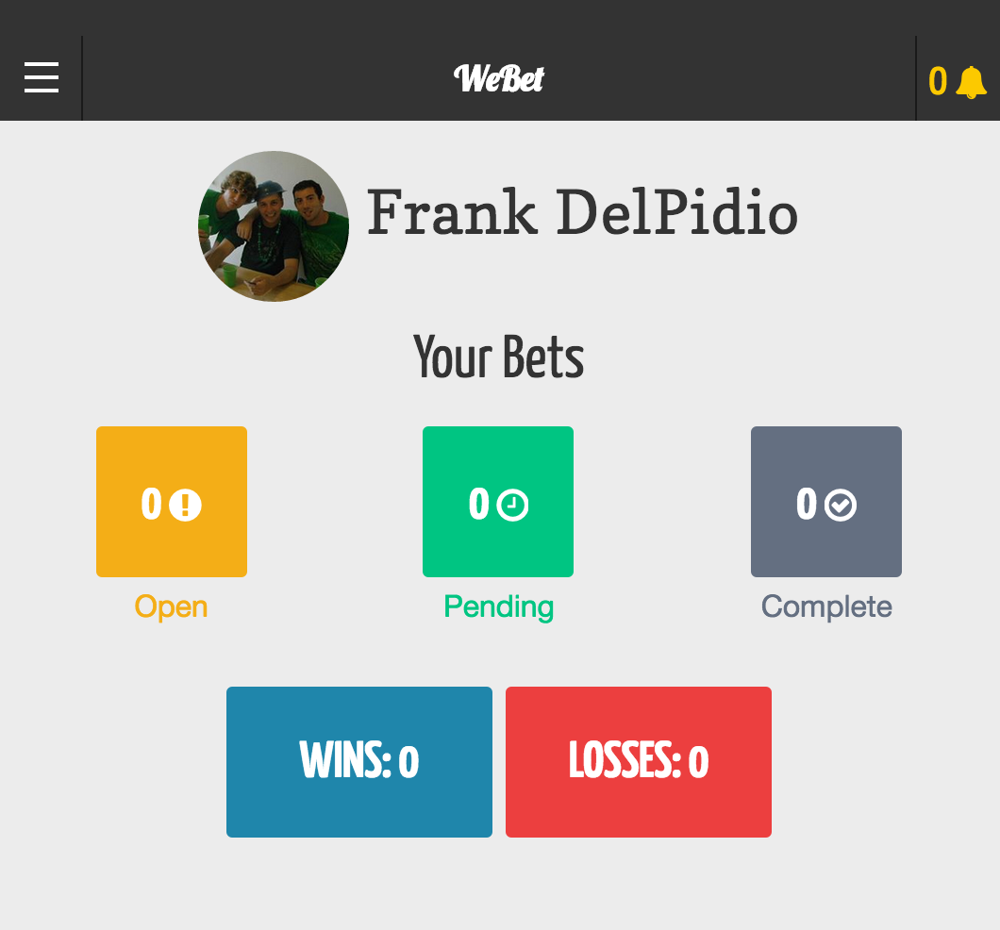
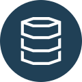
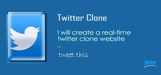
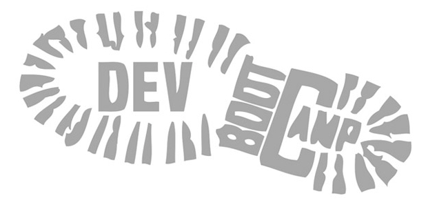
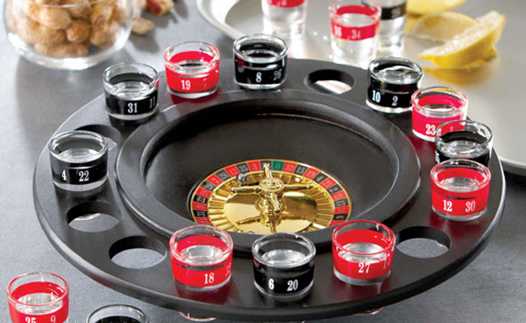

<section>
  <ul id="gallery">
      <li>
      <a href="https://github.com/fdel15/webet">
       
       <p><span style="font-weight: bold">WeBet:</span> Fun prop bets made easy. An in development mobile app that allows friends to send prop bets to one another. Created with MeteorJS and packaged into an iOS app using the Cordova library.<br><br>
        My role in the project was to learn MongoDB and develop the backend for our application. I was responsible to figure out and understand Meteor's publish-subscribe pattern to transfer the correct information from our database to the front end.</p>
      </a>
    </li>
      <li>
      <a href="https://www.codecademy.com/courses/learn-sql">
       
       <p><span style="font-weight: bold">Codecademy Learn SQL:</span> As a Curriculum Engineer I created Codecademy's Intro To SQL course.<br><br>
        I was responsible for designing the course, writing the content, and helping to build the learning environment. I also wrote tests for each of the exercises using Bats, a TAP-compliant testing framework for Bash.</p>
      </a>
    </li>
      <li>
      <a href="https://github.com/fdel15/rulers2">
       
       <p><span style="font-weight: bold">Rulers On Rails:</span> A Ruby MVC web framework built from the ground up.<br><br>
        The purpose of this project was to gain a better understanding of the Ruby on Rails framework. Rulers on Rails is designed to work as a simpler version of Rails. By using similar design patterns found in the Rails framework, I now have a better understanding about how a lot of Rails "magic" works, and why it works the way it does.</p>
      </a>
    </li>
      <li>
      <a href="https://github.com/fdel15/codesnaps">
       
       <p><span style="font-weight: bold">CodeSnaps:</span> A social network using symmetric relationship model. Created with Ruby on Rails, Bootstrap, Devise, and PostgreSQL. It is currently hosted on Heroku.<br><br>
       The purpose of this project was to become familiar with the symmetric relationship model used in social networks such as Facebook. I also wanted to build a social network that my students and I could use after our class ended.</p>
      </a>
    </li>
    <li>
      <a href="https://github.com/fdel15/michaelHartlTutorial">
      <p><span style="font-weight: bold">Twitter Clone: </span>Web application built with Ruby on Rails and hosted on Heroku. This project was built following Michael Hartl's Ruby on Rails tutorial. <br><br>The purpose of this project was to learn more about the Rails framework. In this tutorial I wrote a user authentication system from scratch, learned about Rails security features, set up Amazon hosting for images, and practiced TDD.</p></a>
    </li>
    <li>
      <a href="https://github.com/fdel15/pdfmh-dbc-overflow">
      <p><span style="font-weight: bold">DBC Overflow: </span>Web application built with Ruby on Rails and hosted on Heroku. Allows DBC students to signup, login, post and answer questions, as well as upvote or downvote answers and questions. This project was built in 3 days by myself and 4 other Dev Bootcamp Students using Test Driven Development.<br><br>
      My main role was to develop the Questions index page and implement testing using Rspec. I also contributed to connecting Answers and refactoring code.</p></a>
    </li>
    <li>
      <a href="https://github.com/fdel15/angular-rails-app">
      <p><span style="font-weight: bold">Hacker News Clone: </span>Web application built with Ruby on Rails and AngularJS. This app allows users to login, create posts, create comments, and upvote posts and comments. <br><br>The purpose of this application was to learn how to configure an Angular-Rails application. This was my first experience working with Angular and I learned a lot about services, templates, Angular controllers, and Angular routing. I was able to successfully implment several angular-rails gems, installed Angular using Bower, and used Devise for UserAuth.</p></a>
    </li>
    <li>
      <a href="https://github.com/fdel15/bar_roulette">
      <p><span style="font-weight: bold">Bar Roulette: </span>Hackathon project built in 24 hours using Rails, MongoDB, YelpAPI, and UberAPI.<br><br>

      Bar Roulette is an application to make bar hopping easier and more fun. It takes your current location and using the YelpAPI randomly returns a bar within a 5 mile radius. Using the UberAPI you can then arrange to have a car come pick you up with the click of a button, or you can search again to return a different bar.<br><br>

      My role was to help configure Rails using MongoDB as our database, and set up the YelpAPI and UberAPI.</p></a>
    </li>
  </ul>
</section>
